18. Logotipo Exmouth Fish Co.¶
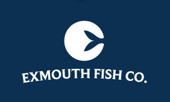Abrimos un nuevo documento con Inkscape.
En el menú
Archivo... Propiedades del documento...dentro de la pestaña Rejillas añadimos una nueva rejilla rectangular al documento y cambiamos los siguientes parámetros.Unidades de la rejilla en milímetros.
Espaciado X y espaciado Y en 1 milímetro.
Línea primaria cada 4.
Rejilla activada, visible y ajustar solamente a líneas de rejilla visibles.
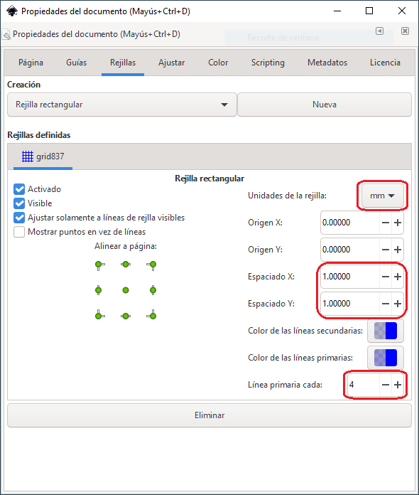Cuando terminemos, cerramos la ventana y veremos una rejilla rectangular en el nuevo documento de Inkscape.

Esta rejilla nos va a ayudar a dibujar los puntos de forma simétrica.
Para que la rejilla funcione debemos asegurarnos de activar el botón correspondiente de la barra de herramientas derecha.

A continuación dibujaremos un círculo rojo transparente de un diámetro de 8 cuadrados de rejilla (32 milímetros).
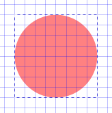Para continuar dibujamos con la herramienta de dibujar rectas y curvas
 la siguiente figura cerrada parecida a una cola de pez.
No nos preocupamos mucho de la posición de los puntos,
que más tarde colocaremos en su sitio.
la siguiente figura cerrada parecida a una cola de pez.
No nos preocupamos mucho de la posición de los puntos,
que más tarde colocaremos en su sitio.
Hacemos zoom en la figura y con la herramienta de editar nodos
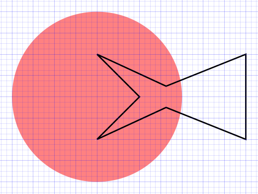 colocamos los puntos de la cola de pez en su sitio tal y como
muestra la siguiente imagen.
colocamos los puntos de la cola de pez en su sitio tal y como
muestra la siguiente imagen.Ahora es necesario curvar las líneas para conseguir el efecto de cola de pez. Para ello, seleccionamos los dos nodos de la izquierda y pulsamos en el botón de suavizar los nodos seleccionados y luego en el botón de convertir en esquina los nodos seleccionados.
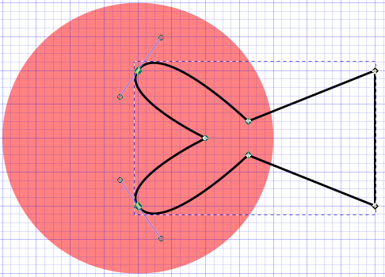Movemos los tiradores para que se ajusten a la posición que muestra la siguiente figura.
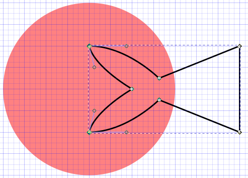Continuamos suavizando las líneas correspondientes a los nodos centrales. Esta vez seleccionamos los dos nodos y pulsamos en el botón de hacer simétricos los nodos seleccionados y nos quedará el siguiente dibujo.
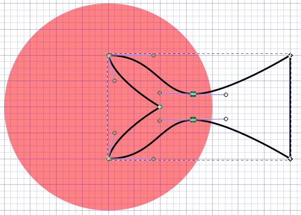Movemos los tiradores para ajustar el dibujo.
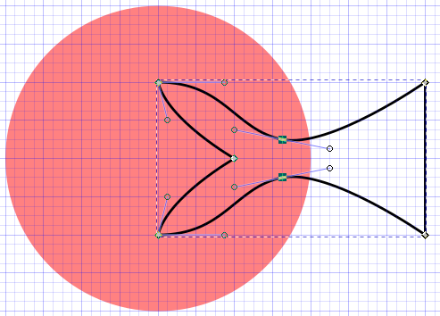Para terminar de dibujar la cola de pez, seleccionamos el nodo central, le suavizamos y le convertimos en esquina. Ajustamos los tiradores tal y como se muestra en la figura y ya tenemos terminada la cola de pez con un dibujo simétrico.

Copiamos el logotipo del comienzo de esta página en Inkscape para poder copiar el color del fondo del logotipo en la cola de pez. También quitaremos el borde negro.
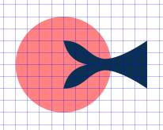Dibujamos un rectángulo de 136 milímetros de ancho por 80 milímetros de alto. Movemos al fondo el rectángulo con el menú
Objeto... Bajar al fondoy lo colocamos detrás de los dibujos anteriores.Ahora ya podemos cambiar el color del círculo a blanco sin transparencia.
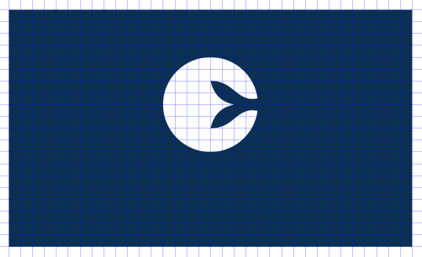Para continuar escribiremos el texto "EXMOUTH FISH CO." en color blanco tamaño 28 puntos y tipo de letra Georgia. Por ahora no vamos a intentar que el tipo de letra se parezca.
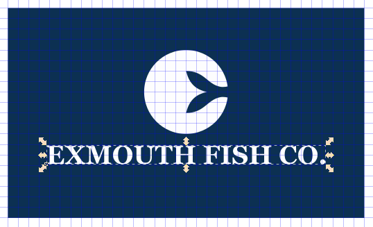Para curvar las letras debemos dibujar un trayecto con la herramienta de dibujar líneas y curvas
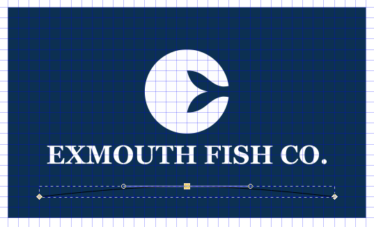
y posteriormente curvar el punto central.Movemos la línea curva al centro y la subimos hasta la tercera marca de la rejilla desde abajo.

Ahora seleccionamos el texto y la línea curva y seleccionamos la herramienta del menú
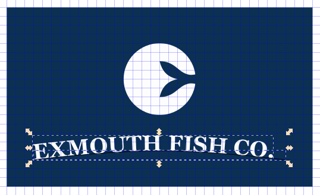Texto... Poner en trayectoEl texto no está exactamente en el centro de la línea. Para moverle hacia la derecha seleccionamos el texto con la herramienta de texto
 y colocamos el cursor antes
de la primera letra "E".
Ahora podemos pulsar las teclas Alt + cursor derecha
para mover el texto hacia la derecha a la posición deseada
en el centro de la línea.
y colocamos el cursor antes
de la primera letra "E".
Ahora podemos pulsar las teclas Alt + cursor derecha
para mover el texto hacia la derecha a la posición deseada
en el centro de la línea.Con la combinación de teclas Alt + cursor arriba podremos mover el texto hacia arriba tal y como muestra la imagen.
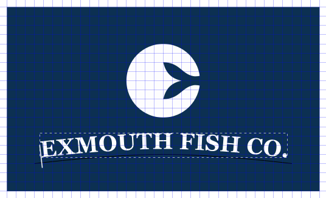Para terminar, seleccionamos solamente la línea curva inferior y la movemos al fondo con el menú
Objeto... Bajar al fondopara que no se pueda ver.En el menú
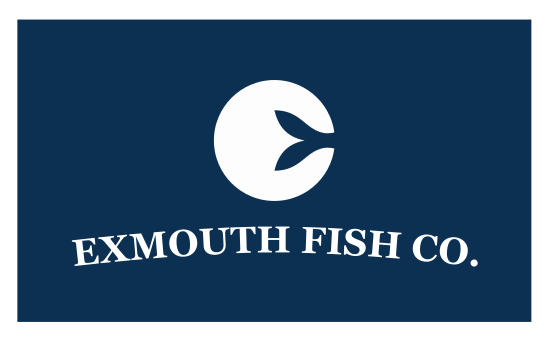Archivo... Propiedades del documento...dentro de la pestaña Rejillas quitamos la visualización de la rejilla y ya tenemos el logotipo terminado.